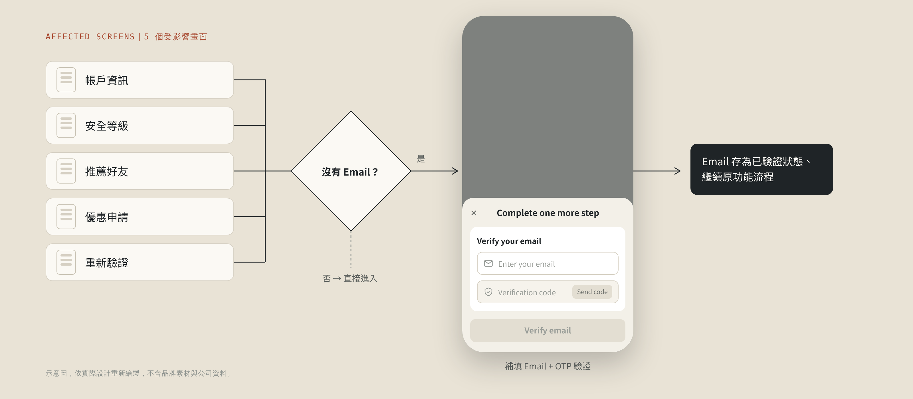
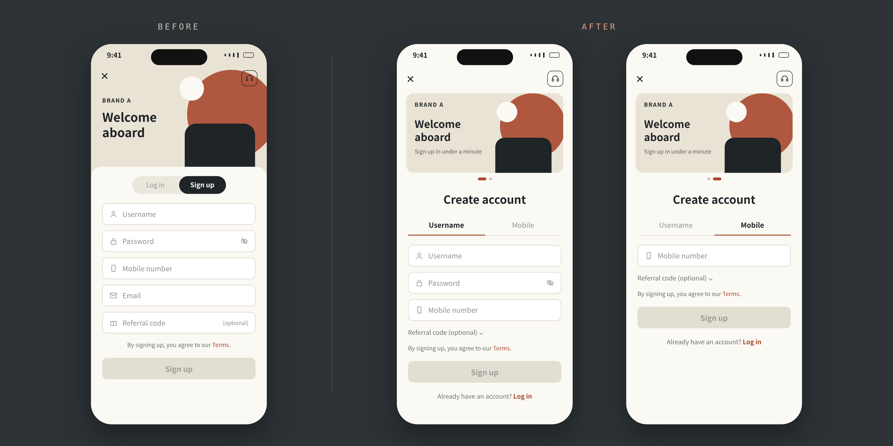
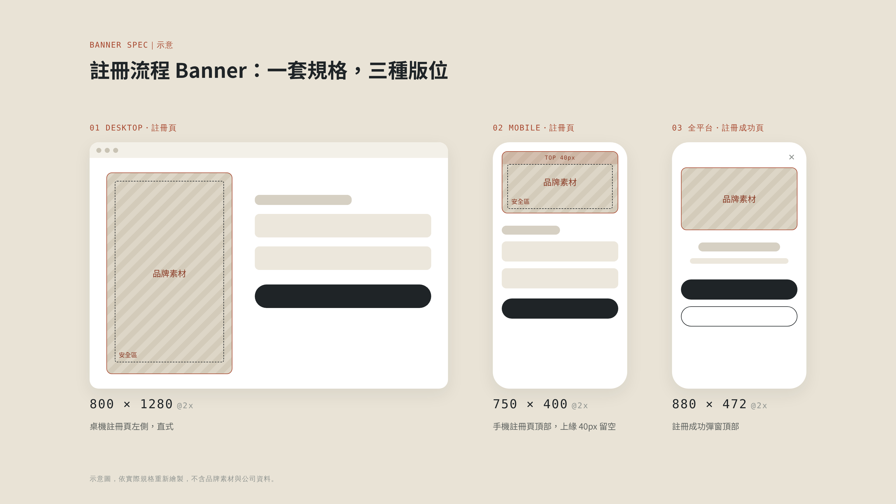
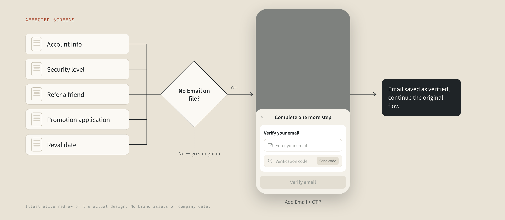
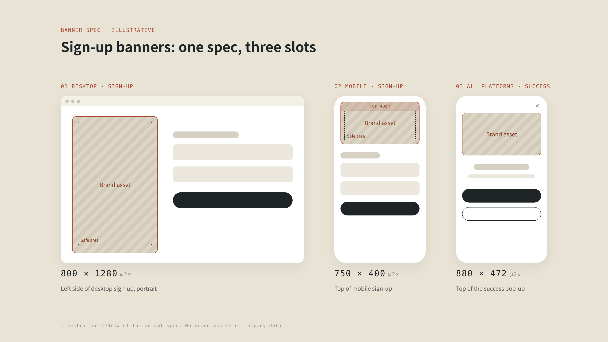

1
移除 Email：先列出所有受影響的畫面
拿掉一個欄位看似簡單，但帳戶資訊、安全等級、推薦好友、優惠申請、重新驗證等功能都依賴 Email。我在 production 上逐頁檢查所有會用到 Email 的地方，再和工程師從前端與後端兩個方向交叉確認，並設計統一的補救機制：用戶進入這些功能卻沒填過 Email 時，彈出 bottom sheet 補填並完成 OTP 驗證。

看似只是新增一條註冊路徑，但三個品牌、三個市場的欄位規則各不相同，還得同時移除 Email。我花了一年依序重新設計三個品牌的註冊與登入，最後把三套規則統一成一套。

Background|
舊的註冊頁把 5 個欄位一次攤開：用戶名、密碼、手機號碼、Email 和推薦碼。推薦碼雖然選填，對新用戶來說仍像是 5 個都得填完。這次的需求只有一句話：「新增手機號碼註冊」，給用戶一條更快的路。
我每次畫 mockup 前都會先在 production 上實際操作一遍，很多舊流程的問題就在這一步被抓出來。例如註冊和登入原本擠在同一頁用 tab 切換，加入手機號碼後資訊會過多，因此拆成兩頁；同時又接到「把 Email 從註冊表單移除」的需求。專案就從「加一條註冊路徑」擴大成整體註冊與登入流程的優化。
這個需求來自上層，背後的假設很直接：舊的註冊要填 5 個欄位，改成手機註冊後只剩 1 個，預期能大幅提升轉換率。當時沒有舊流程的流失數據或用戶回饋，所以要等上線後的數據，才能驗證這個假設。
Constraints|
前兩個品牌必須在年度流量最高的檔期前上線。
移除 Email 牽動所有用到 Email 的舊功能，登入頁也不能套用新規則。
三個品牌、三個市場，加上 Web 和 App 多個平台，同一個欄位的現行行為都不一樣。
上線前沒有同樣的追蹤數據，成效只能用前後期與對照品牌比較。
Key decisions|
拿掉一個欄位看似簡單，但帳戶資訊、安全等級、推薦好友、優惠申請、重新驗證等功能都依賴 Email。我在 production 上逐頁檢查所有會用到 Email 的地方，再和工程師從前端與後端兩個方向交叉確認，並設計統一的補救機制：用戶進入這些功能卻沒填過 Email 時，彈出 bottom sheet 補填並完成 OTP 驗證。

第一個品牌的驗證規則只寫了「沿用原本規則」，到 QA 和 UAT 才發現幾乎每個欄位在不同市場或平台的行為都不同，QA 無從測起。之後我做了兩個改變：
取捨：登入頁刻意不套新的註冊規則。登入 API 本來就不驗長度，密碼上限設太緊，舊用戶會永遠登不進來。
註冊和登入都有「手機／帳號」兩個 tab，但規則刻意不同，因為用戶在這兩頁的目標不一樣。這些切換的邊界情境是在品牌 C 開發時由 PDM 提出，再由我們設計師定案：
目標是盡快完成，共用欄位（手機、推薦碼）切換時連動、不清空。
兩種方式是不同憑證，各自記住、互不干擾。
這次也一併修正了「記住我」：原本對外說明與實際行為衝突，決議統一記住帳號＋密碼，checkbox 文案也改成明確告知密碼會被記住。取消勾選時，原本記住的登入資料會立即清除、不需要送出表單，因為這符合用戶預期，也有資安上的考量。
加入手機號碼登入時，後端直接把手機驗證接在原本的登入 API 後面，再請團隊確認。我檢視後提出這套驗證順序和統一的錯誤訊息，讓用戶看得懂，也不讓有心人從中得到資訊：
全品牌統一：預設手機 tab、系統自動產生帳密並排除 O／0、I／l／1 等易混淆字元。最後也盤點了品牌 A 尚未跟上的地方，做成對齊狀態表與設計稿。
Collaboration|
註冊流程上的 banner 由品牌團隊製作、從後台上架，再由前端顯示。我和前端一起訂定各版位的尺寸與顯示行為，再整理成給品牌設計師的出圖規範，讓素材上架後在每種裝置上都正確顯示。

Outcome|
改版前 39 天、改版後 37 天，排除事故期間，比較日均。數據限制：指標記錄的是「送出」而非「註冊成功」；對照品牌並非完美對照組。前兩個品牌都在年度流量高峰前上線。
Reflection|
移除 Email 的周邊畫面都畫好了，卻沒有和主要功能一起上線，第一次發版後 rollback。之後我會逐張確認 AC 和 mockup 一致，並在每次 sprint 開始前的 planning 會議，主動提出功能之間的開發相依性。
寫起來省事，但各市場、各平台的差異最後還是要有人處理，通常就落到 QA 身上。
畫 mockup 前我一直會先操作 production，但當時看的是流程，沒有逐一比對各市場、各平台的欄位驗證規則。重來一次，我會在專案一開始就把這些規則整理成對照表，再開始設計。
It looked like just one more way to sign up, but field rules differed across three brands and three markets, and Email had to come off the sign-up form at the same time. Over one year I redesigned sign-up and login for each brand in turn and unified three sets of rules into one.
Background|
The old sign-up page laid out 5 fields at once: username, password, phone number, Email and a referral code. The referral code was optional, but to a new user it still looked like five fields to fill. The brief was one line: "add phone number sign-up," to give users a faster way in.
Before drawing any mockup I walk through the live product, and that is where most of the old flow's problems surfaced. Sign-up and login shared one page behind tabs, which would get crowded once phone options were added, so I split them into two pages. A request to remove Email from the form landed at the same time, and the project grew from "one more sign-up path" into a redesign of the whole sign-up and login flow.
The request came from leadership, and the hypothesis was simple: the old sign-up had 5 fields, mobile sign-up needs just 1, so conversion should rise sharply. There was no drop-off data or user feedback on the old flow, so only post-launch data could test that hypothesis.
Constraints|
The first two brands had to launch before the busiest traffic period of the year.
Removing Email touched every older feature that relied on it, and login could not adopt the new rules.
Across three brands, three markets and both web and app, the same field behaved differently.
Without prior tracking, impact could only be read from before/after periods and a control brand.
Key decisions|
Dropping one field looks trivial, but account info, security level, refer-a-friend, promotion applications and revalidation all depended on Email. I checked, page by page, every place in production that used Email, cross-checked front and back end with engineers, and designed one recovery pattern: if a user without Email opens one of these features, a bottom sheet asks for it and verifies it by OTP.

The first brand's validation said only "keep the existing rules". In QA and UAT we found nearly every field behaved differently by market or platform, and QA had nothing to test against. I changed two things:
Trade-off: login deliberately kept the old rules. The login API never checked length, and a tight password cap would have locked existing users out for good.
Sign-up and login both have Phone / Username tabs, but they deliberately behave differently, because users want different things on these two pages. These edge cases were raised by the PDM during Brand C, and we designers decided the rules:
The goal is to finish fast, so shared fields (phone, referral code) carry over when switching tabs.
The two methods are different credentials, so each tab remembers its own and never overwrites the other.
We also fixed "Remember me": public messaging contradicted actual behavior, so it now remembers username and password, and the checkbox copy says so plainly. Unchecking it clears the saved credentials immediately, with no need to submit the form, because that is what users expect and it is safer.
To add phone login, the back end appended phone validation to the existing login API and asked the team to confirm. I reviewed it and proposed this validation order with a single shared error message, so errors are clear to users without giving anything away to people probing for accounts:
Shared across brands: Phone tab by default, and auto-generated credentials that skip look-alike characters such as O/0 and I/l/1. I also audited where Brand A still lagged and prepared an alignment table and designs.
Collaboration|
Banners in the sign-up flow are made by the brand team, uploaded through the CMS and displayed by front-end. With front-end I defined the size and behavior of each slot, then turned it into artwork guidelines for the brand designers, so every banner displays correctly on every device once it goes live.

Outcome|
39 days before vs 37 days after, compared as daily averages, incident period excluded. Limits: the metric counts submits, not successful sign-ups, and the control brand is not a perfect control. Both early brands launched before the yearly traffic peak.
Reflection|
Every screen affected by the Email removal was designed, yet they didn't ship with the main feature, and the first release was rolled back. Since then I check each AC against the mockup and raise feature dependencies at every sprint planning meeting.
It is quick to write, but someone still has to deal with the differences across markets and platforms, and that usually ends up being QA.
I always walked through production before designing, but I was looking at flows, not comparing field validation rules across every market and platform. Next time I would map those rules into a comparison table at the very start, before designing anything.